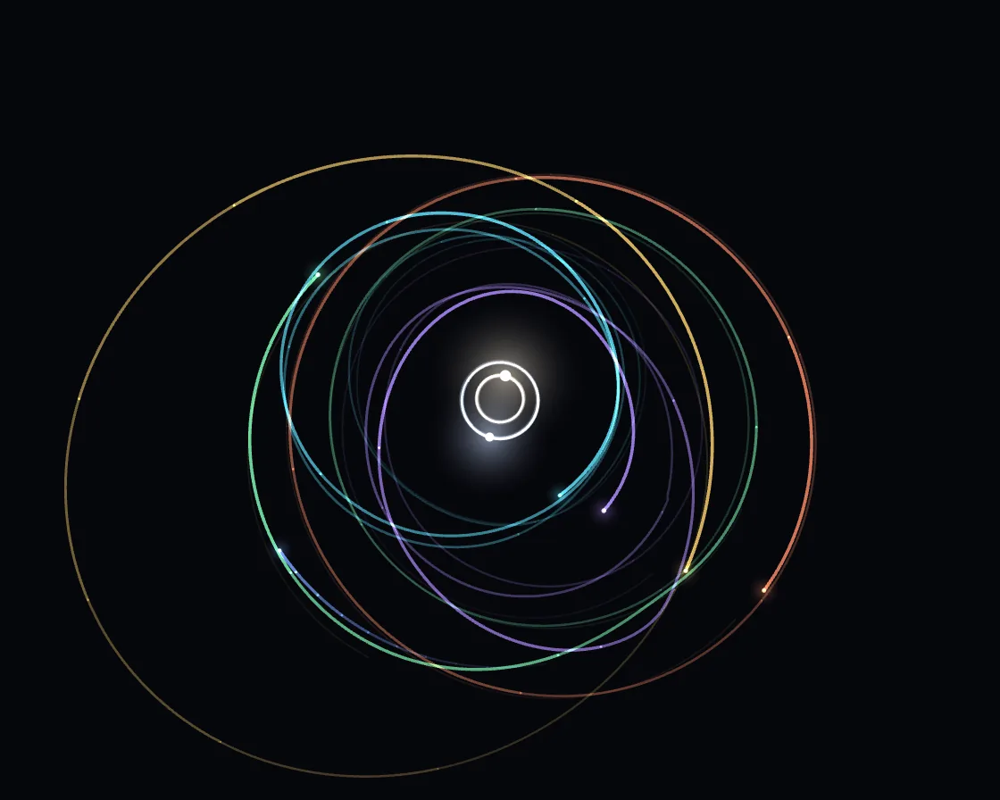

N-body orbits
N-body orbits is a Canvas effect: every body pulls every other; leapfrog integration keeps orbits closed. One plain JavaScript file with no dependencies; add it with npx motion-library add orbits.

Open it live, tune it and copy the code
What is N-body orbits?
Planets circle twin suns in slowly turning rosettes while comets swing through; click to drop a planet.
How does N-body orbits work?
Softened inverse-square gravity between every pair, stepped with leapfrog (half kick, drift, half kick), which is symplectic, so orbits stay closed; the binary’s tug makes them precess.
How do I add N-body orbits to my website?
- In your project folder, run
npx motion-library add orbits. It writesanimations/orbits.js. Needs Node 18 or newer. - Import it and call it with a container element that has a size:
import fx from './animations/orbits.js'; const stop = fx(document.querySelector('#hero')); - Call
stop()to clean up, for example when a component unmounts.
Every setting below is also a flag, so you can install it already tuned: npx motion-library add orbits --planets 10.
What settings can I tweak?
| Setting | Flag | Default | Range | Step |
|---|---|---|---|---|
| Planets | --planets | 6 | 1 to 10 | 1 |
| Speed | --speed | 1 | 0.1 to 3 | 0.05 |
| Trail length | --trail | 900 | 50 to 1500 | 10 |
Specifications
- Renderer
- Canvas 2D
- Category
- Simulation
- Dependencies
- None
- File size
- 7.9 KB, unminified
- Interactive
- Yes: it responds to the pointer
- Reduced motion
- Respects prefers-reduced-motion
- Licence
- MIT-0: use it anywhere, no credit needed
Source code
// N-body gravity. A binary star and a handful of planets all pull on each other (every pair, inverse-square, slightly
// softened), stepped with leapfrog integration: half a kick to the velocities, a full drift of the positions, another
// half kick. Leapfrog is symplectic, so energy doesn’t creep and orbits stay closed for ever instead of spiralling.
// Circling a pair of suns, the planets’ orbits precess into rosettes. Bodies that touch merge, keeping momentum. Click
// to drop a new planet on a circular orbit around the centre of mass.
const PARAMS = { planets: 6, speed: 1, trail: 900 };
export default function (stage) {
const canvas = document.createElement('canvas');
canvas.style.cssText = 'position:absolute;inset:0;width:100%;height:100%;display:block;touch-action:none';
stage.append(canvas);
const ctx = canvas.getContext('2d');
const reduce = matchMedia('(prefers-reduced-motion: reduce)').matches;
let W = 0, H = 0, D = 1;
const resize = () => { D = Math.min(devicePixelRatio, 2); W = stage.clientWidth || 1; H = stage.clientHeight || 1; canvas.width = Math.round(W * D); canvas.height = Math.round(H * D); };
const ro = new ResizeObserver(resize); ro.observe(stage); resize();
const TRAIL = Math.max(20, Math.round(PARAMS.trail)), EPS2 = 0.0004;
const palette = ['#5ee7ff', '#ff5fa2', '#b38cff', '#7dffb0', '#ffd166', '#ff8a5c', '#7aa2ff', '#f2f2ff'];
let bodies = [], pi = 0;
const add = (x, y, vx, vy, m, col, star = false) => {
bodies.push({ x, y, vx, vy, ax: 0, ay: 0, m, col, star, r: star ? 0 : 0.007 + Math.cbrt(m) * 0.04, hx: new Float32Array(TRAIL), hy: new Float32Array(TRAIL), head: 0, len: 0 });
};
const com = () => { let M = 0, x = 0, y = 0, vx = 0, vy = 0; for (const b of bodies) { M += b.m; x += b.x * b.m; y += b.y * b.m; vx += b.vx * b.m; vy += b.vy * b.m; } return [x / M, y / M, vx / M, vy / M, M]; };
const circular = (x, y, prograde = 1) => {
const [cx, cy, cvx, cvy, M] = com(), dx = x - cx, dy = y - cy, r = Math.hypot(dx, dy) || 1e-3, v = Math.sqrt(M / r) * prograde;
return [cvx - dy / r * v, cvy + dx / r * v];
};
const reset = () => {
bodies = []; pi = 0;
// the binary: masses 0.62 and 0.38 orbiting their common centre, separation 0.16
const m1 = 0.62, m2 = 0.38, a = 0.16, v = Math.sqrt((m1 + m2) / a);
add(-a * m2, 0, 0, -v * m2, m1, '#fff1d6', true); bodies[0].r = 0.03;
add(a * m1, 0, 0, v * m1, m2, '#cfe0ff', true); bodies[1].r = 0.024;
const n = Math.max(1, Math.round(PARAMS.planets));
for (let i = 0; i < n; i++) {
const r = 0.42 + i * (0.52 / n) + Math.random() * 0.04, th = Math.random() * 6.283;
const x = Math.cos(th) * r, y = Math.sin(th) * r, [vx, vy] = circular(x, y);
const e = 0.82 + Math.random() * 0.18; // eccentric, so the orbits precess into rosettes
add(x, y, vx * e, vy * e, 0.0005 + Math.random() * 0.0025, palette[pi++ % palette.length]);
}
accel();
};
const accel = () => {
for (const b of bodies) { b.ax = 0; b.ay = 0; }
for (let i = 0; i < bodies.length; i++) for (let j = i + 1; j < bodies.length; j++) {
const a = bodies[i], b = bodies[j], dx = b.x - a.x, dy = b.y - a.y, d2 = dx * dx + dy * dy + EPS2, inv = 1 / (d2 * Math.sqrt(d2));
a.ax += dx * inv * b.m; a.ay += dy * inv * b.m; b.ax -= dx * inv * a.m; b.ay -= dy * inv * a.m;
}
};
const leapfrog = h => {
for (const b of bodies) { b.vx += b.ax * h / 2; b.vy += b.ay * h / 2; b.x += b.vx * h; b.y += b.vy * h; }
accel();
for (const b of bodies) { b.vx += b.ax * h / 2; b.vy += b.ay * h / 2; }
};
const collide = () => {
for (let i = 0; i < bodies.length; i++) for (let j = i + 1; j < bodies.length; j++) {
const a = bodies[i], b = bodies[j];
if (Math.hypot(a.x - b.x, a.y - b.y) > (a.r + b.r) * 0.8) continue;
const big = a.m >= b.m ? a : b, small = big === a ? b : a, M = a.m + b.m;
big.vx = (a.vx * a.m + b.vx * b.m) / M; big.vy = (a.vy * a.m + b.vy * b.m) / M;
big.x = (a.x * a.m + b.x * b.m) / M; big.y = (a.y * a.m + b.y * b.m) / M; big.m = M;
if (!big.star) big.r = 0.007 + Math.cbrt(M) * 0.04;
bodies.splice(bodies.indexOf(small), 1); accel(); return;
}
};
reset();
const scale = () => Math.min(W, H) * 0.47;
let lastPointer = -1e9, nextComet = 6;
const pd = e => {
const r = canvas.getBoundingClientRect(), s = scale(), [cx, cy] = com();
const x = (e.clientX - r.left - W / 2) / s + cx, y = (e.clientY - r.top - H / 2) / s + cy;
const [vx, vy] = circular(x, y); add(x, y, vx, vy, 0.001 + Math.random() * 0.002, palette[pi++ % palette.length]); accel();
lastPointer = performance.now();
};
stage.addEventListener('pointerdown', pd);
let raf, last = performance.now(), t = 0, warm = 360;
function frame(now) {
const dt = warm > 0 ? 1 / 60 : Math.min(0.05, (now - last) / 1000); last = now; t += dt;
const h = dt * 0.6 * PARAMS.speed * (reduce && warm <= 0 ? 0.08 : 1) / 8;
for (let k = 0; k < 8; k++) leapfrog(h);
collide();
const [cx, cy] = com();
// drop anything flung far away; with nobody clicking, now and then send in a comet on a long ellipse
bodies = bodies.filter(b => b.star || Math.hypot(b.x - cx, b.y - cy) < 4);
if (t > nextComet && now - lastPointer > 8000 && bodies.length < 12) {
const planets = bodies.filter(b => !b.star && b.m > 0.0003).length, th = Math.random() * 6.283;
if (planets < PARAMS.planets) { // top up planets lost to mergers and ejections
const r = 0.5 + Math.random() * 0.45, x = cx + Math.cos(th) * r, y = cy + Math.sin(th) * r, [vx, vy] = circular(x, y);
add(x, y, vx, vy, 0.0005 + Math.random() * 0.002, palette[pi++ % palette.length]);
} else {
const r = 1.05, x = cx + Math.cos(th) * r, y = cy + Math.sin(th) * r, [vx, vy] = circular(x, y);
add(x, y, vx * 0.55, vy * 0.55, 0.0003, '#e9f6ff');
}
accel(); nextComet = t + 5;
}
if (bodies.length < 4) reset();
const s = scale(), ox = W / 2 - cx * s, oy = H / 2 - cy * s;
for (const b of bodies) { b.hx[b.head] = b.x - cx; b.hy[b.head] = b.y - cy; b.head = (b.head + 1) % TRAIL; b.len = Math.min(TRAIL, b.len + 1); }
if (warm > 0) { warm--; frame(now); return; } // pre-run one trail’s worth so the first frame has orbits drawn
ctx.setTransform(D, 0, 0, D, 0, 0);
ctx.globalCompositeOperation = 'source-over'; ctx.globalAlpha = 1;
ctx.fillStyle = '#06070c'; ctx.fillRect(0, 0, W, H);
ctx.globalCompositeOperation = 'lighter'; ctx.lineCap = 'round'; ctx.lineJoin = 'round';
const SEG = 10;
for (const b of bodies) {
ctx.strokeStyle = b.col;
for (let q = 0; q < SEG; q++) {
const a0 = Math.floor(q * b.len / SEG), a1 = Math.floor((q + 1) * b.len / SEG); if (a1 - a0 < 1) continue;
const f = (q + 1) / SEG; ctx.globalAlpha = (0.08 + 0.92 * f * f) * (b.star ? 0.35 : 0.8); ctx.lineWidth = b.star ? 1 : 0.7 + f * 1.1;
ctx.beginPath();
for (let j = a0; j <= Math.min(a1, b.len - 1); j++) { const i = (b.head - b.len + j + TRAIL) % TRAIL; const X = W / 2 + b.hx[i] * s, Y = H / 2 + b.hy[i] * s; j === a0 ? ctx.moveTo(X, Y) : ctx.lineTo(X, Y); }
ctx.stroke();
}
}
for (const b of bodies) {
const X = ox + b.x * s, Y = oy + b.y * s, R = Math.max(1.5, b.r * s);
const gr = ctx.createRadialGradient(X, Y, 0, X, Y, R * (b.star ? 7 : 4));
gr.addColorStop(0, b.col); gr.addColorStop(1, 'rgba(0,0,0,0)');
ctx.globalAlpha = b.star ? 0.55 : 0.35; ctx.fillStyle = gr; ctx.beginPath(); ctx.arc(X, Y, R * (b.star ? 7 : 4), 0, 6.2832); ctx.fill();
ctx.globalAlpha = 1; ctx.fillStyle = b.star ? '#ffffff' : b.col; ctx.beginPath(); ctx.arc(X, Y, R * 0.5, 0, 6.2832); ctx.fill();
}
raf = requestAnimationFrame(frame);
}
raf = requestAnimationFrame(frame);
return () => { cancelAnimationFrame(raf); ro.disconnect(); stage.removeEventListener('pointerdown', pd); canvas.remove(); };
}